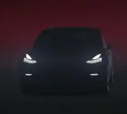

Tesla Staff | Unity Manager | Verses Director | Lucasfilm/Disney Senior UX |  Microsoft Senior |  Hypercube Lead |
| recent | |||||||
 Tesla Autopilot 10.69 Autopilot Visualization Lead |  Tesla Software v11 (2021) UI Core and Autopilot Visualization |  Tesla Model S Plaid (2021) UI Core Framework |  W&G: The Big Fix Up Technical Advisor (room solving by Unity MARS) |  Dr Seuss | Unity MARS Spatial App StudioEngineering Manager | ||
| startups | |||||||
 VERSES.IO Cofounder and Director of Spatial Standards | Karuna Labs VR Motion TherapyEngineering Lead |  4D Process Space-Time VisualizationFounder |  Lewcid Systems CEO/Founder -- | ||||
| disney | |||||||
 Vader Immortal: A Star Wars VR Series Prototype/Pre-Production |  Star Wars: Droid Repair Bay Prototype/Pre-Production |  Star Wars: Secrets of the Empire(VOID experience) Prototype/Pre-Production |  Google Seurat Announce Prototype to Production |  CARNE y ARENA Prototype/Pre-Production | |||
| microsoft-hololens | |||||||
 Holographic MRI for Stanford Surgeons Lead on Prototype to Medical Pilot |  Lowes HoloLens Experience AR Systems and Interfaces | Windows 10 Holographic Showcases and Holo-Academy Teams |  HoloLens Analog Prototype and Launch Teams | Excel 2016 - 3D Maps Team Graphics and GPU Lead | Fragments (HoloLens) Early Gestures and Systems | ||
| microsoft-kinect | |||||||
 Zoo Tycoon (Xbox One) Gestures + Systems |  Kinect Star Wars Gestures + Systems |  Kinect Pixar Rush Special Thanks |  Kinect Disneyland Adventures Gestures + Systems |  Kinectimals Gestures + Systems | Kinect for Xbox 360 Special Thanks |  Kinect Sports Special Thanks |  Kinect Adventures! Kinect Adventures!Special Thanks |
| microsoft-xbox | |||||||
Alan Wake Special Thanks |  PIX for Windows DirectX/Xbox SDK Developer |  Full House Poker Special Thanks |  Fable II Performance Analysis | Viva Pinata PC Performance Engineer |  Forza Motorsport 2 Graphics Engine and Pipeline Engineer | ||
| hyperchem | |||||||
 | HyperChem 8.0 Graphics | ||||||
| microsoft-internship | |||||||
Windows Vista / WPF Performance Team Intern |